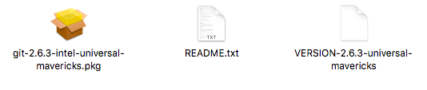
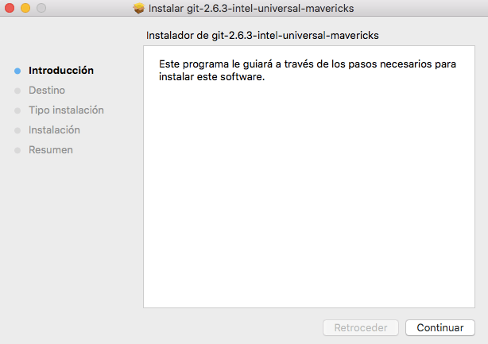
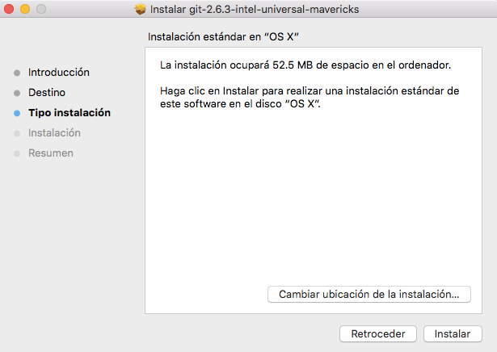
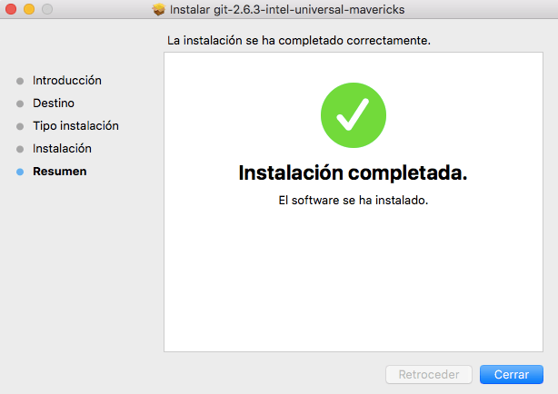
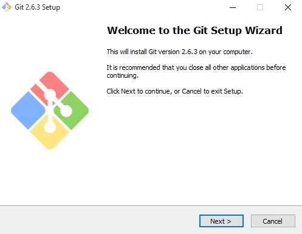
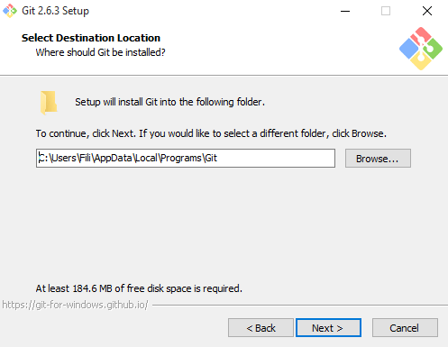
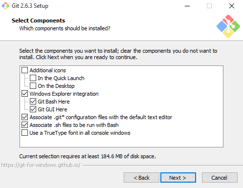

Instalación de Git & GitHub

Si quieres instalar Git en Linux a través de un instalador binario, en general puedes hacerlo mediante la herramienta básica de administración de paquetes que trae tu distribución. Si estás en Fedora por ejemplo, puedes usar yum:
Si estás en una distribución basada en Debian como Ubuntu, puedes usar apt-get:
Para opciones adicionales, la página web de Git tiene instrucciones de instalación en diferentes tipos de Unix. Puedes encontrar esta información en http://git-scm.com/download/linux
Hay varias maneras de instalar Git en un Mac. Probablemente la más sencilla es instalando
las herramientas Xcode de Línea de Comandos. En Mavericks (10.9 o superior) puedes hacer esto desde el
Terminal si intentas ejecutar git por primera vez. Si no lo tienes instalado, te preguntará si deseas
instalarlo.
Si deseas una versión más actualizada, puedes hacerlo a partir de un instalador binario. Un instalador
de Git para OSX es mantenido en la página web de Git. Lo puedes descargar en
http://git-scm.com/download/mac
También puedes instalarlo como parte del instalador de Github para Mac. Su interfaz gráfica de usuario tiene la opción de instalar las herramientas de línea de comandos. Puedes descargar esa herramienta desde el sitio web de Github para Mac en
filisantillan. (30 de octubre de 2020). Como instalar git en Windows Mac y Linux. Recuperado de https://filisantillan.com/blog/como-instalar-git/
filisantillan. (30 de octubre de 2020). Como instalar git en Windows Mac y Linux. Recuperado de https://filisantillan.com/blog/como-instalar-git/
filisantillan. (30 de octubre de 2020). Como instalar git en Windows Mac y Linux. Recuperado de https://filisantillan.com/blog/como-instalar-git/
filisantillan. (30 de octubre de 2020). Como instalar git en Windows Mac y Linux. Recuperado de https://filisantillan.com/blog/como-instalar-git/
También hay varias maneras de instalar Git en Windows. La forma más oficial está disponible para ser descargada en el sitio web de Git. Solo tienes que visitar http://git-scm.com/download/win y la descarga empezará automáticamente. Fíjate que éste es un proyecto conocido como Git para Windows (también llamado msysGit), el cual es diferente de Git. Para más información acerca de este proyecto visita http://msysgit.github.io/
filisantillan. (30 de octubre de 2020). Como instalar git en Windows Mac y Linux. Recuperado de https://filisantillan.com/blog/como-instalar-git/
filisantillan. (30 de octubre de 2020). Como instalar git en Windows Mac y Linux. Recuperado de https://filisantillan.com/blog/como-instalar-git/
filisantillan. (30 de octubre de 2020). Como instalar git en Windows Mac y Linux. Recuperado de https://filisantillan.com/blog/como-instalar-git/
GIT. (21 de Septiembre de 2020). Git - Book. Recuperado de https://git-scm.com/book/es/v2/Inicio---Sobre-el-Control-de-Versiones-Instalación-de-Git
aprendiendoarduino. (30 de octubre de 2020). Aprendiendo Arduino. Recuperado de https://aprendiendoarduino.wordpress.com/tag/git/
confecoopantioquia. (30 de octubre de 2020). Confecoop Antioquia. Recuperado de https://www.confecoopantioquia.coop/convenio/8/unad
ssam. (30 de octubre de 2020). SSAM - UNAD. Recuperado de http://ssam.unad.edu.co/